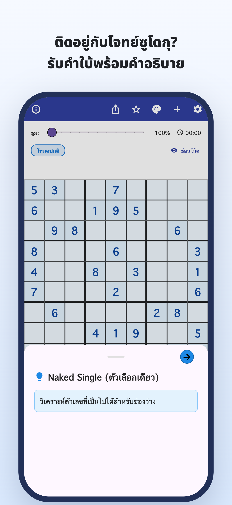
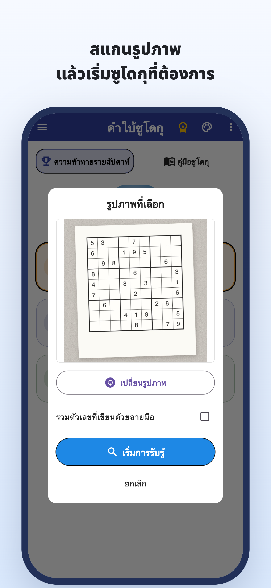
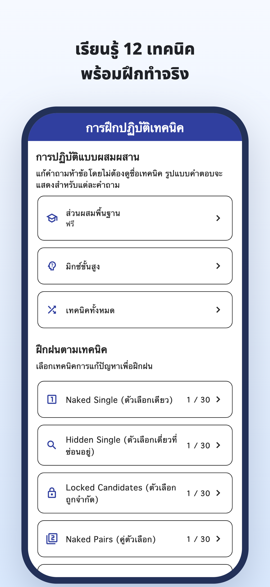
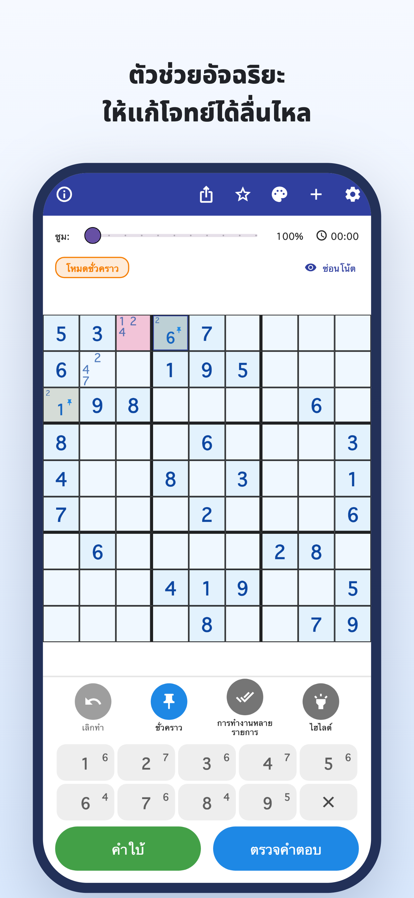
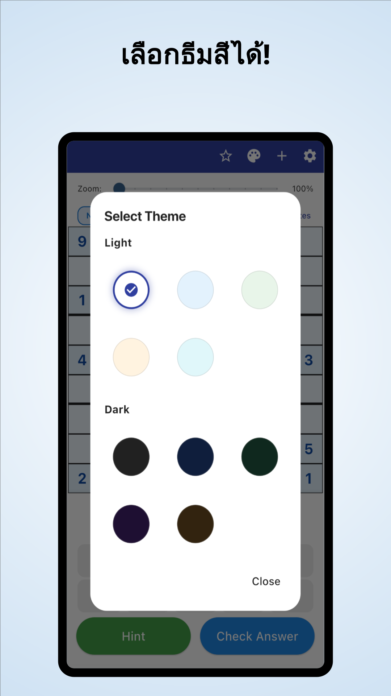

“ต่อไปควรดูตรงไหน?”
ตรวจตารางซ้ำแล้วซ้ำเล่า
แต่ก็ยังติดอยู่ที่เดิม
สแกนด้วยกล้อง · คำใบ้พร้อมคำอธิบาย
สแกนโจทย์จากหนังสือพิมพ์และนิตยสารได้
เข้าใจว่าทำไมตัวเลขจึงลงช่องนั้น แล้วกลับไปแก้ต่อด้วยตัวเอง
iPhone และ Android / ดาวน์โหลดฟรี · การซื้อภายในแอป





เคยเจอแบบนี้ระหว่างเล่นไหม?
ตรวจตารางซ้ำแล้วซ้ำเล่า
แต่ก็ยังติดอยู่ที่เดิม
ทำไมตัวเลขนั้นต้องอยู่ช่องนี้?
แค่ลอกเฉลยยังไม่ตอบโจทย์
อยากนำซูโดกุบนกระดาษที่กำลังแก้
มาเล่นต่อในแอป
เปลี่ยนจุดที่ติดให้เป็นเบาะแส
อ่านซูโดกุจากหนังสือพิมพ์หรือนิตยสารผ่านรูปถ่าย ลดการกรอกตัวเลขทีละช่อง
อ่านจากรูปภาพอ่านเหตุผลของแต่ละก้าว แล้วนำไปคิดหาก้าวต่อไป แทนการเติมคำตอบอย่างเดียว
คำใบ้พร้อมคำอธิบายดูคำอธิบายและแบบฝึกแยกตามเทคนิค แล้วฝึกสังเกตเทคนิคเหล่านั้นด้วยตัวเอง
ฝึกเทคนิคสำหรับคนที่สนุกกับการหาคำตอบด้วยตัวเอง
นำเข้าโจทย์ที่เล่นอยู่ แล้วแก้ต่อจากจุดเดิม
เข้าใจเหตุผลในจุดที่ติด แล้วแก้ต่อด้วยตัวเอง
สำหรับผู้เริ่มต้นและคนที่อยากเรียนเทคนิคถัดไป
อ่าน · ทดลอง · ฝึกฝน
เริ่มในเบราว์เซอร์ได้เลย
อ่านคู่มือหรือลองเล่นโจทย์เต็มหนึ่งข้อ
ตั้งแต่การจดตัวเลือก ไปจนถึงคำอธิบายเทคนิคและแบบฝึก
ลองแก้จนจบ โดยใช้คำใบ้เมื่อจำเป็น
เรียนรู้กติกาและความสนุกของการเชื่อมโยงเบาะแส
ดูช่องที่มีกรอบสีน้ำเงิน แล้วเปิดคำใบ้
คำใบ้ก้าวถัดไป
ตรวจตัวเลือกในช่องว่าง
นี่คือตัวอย่างบนเว็บสำหรับทดลองหนึ่งก้าว หน้าจอในแอปจะแตกต่างกัน
เมื่อติดขัดกับซูโดกุ
ดาวน์โหลด คำใบ้ซูโดกุ
ดาวน์โหลดฟรี · การซื้อภายในแอป
ดาวน์โหลดและทดลองได้ฟรี คำใบ้ การตรวจคำตอบ และการอ่านภาพมีข้อจำกัดจำนวนครั้ง บางการใช้งานต้องรับชมโฆษณาวิดีโอ
Premium เป็นการสมัครสมาชิกรายเดือนหรือรายปี ช่วยลบโฆษณาและใช้คำใบ้กับการตรวจคำตอบได้ไม่จำกัด การอ่านภาพยังมีขีดจำกัดแม้ใช้ Premium ดูราคาและเงื่อนไขได้ในแอป
นำเข้ารูปถ่ายซูโดกุ ตรวจสอบตัวเลขที่อ่านได้และแก้ไขข้อผิดพลาดก่อนเริ่ม รองรับซูโดกุมาตรฐานขนาด 9×9
เล่นโจทย์ที่มีในแอป พร้อมดูคำอธิบายและฝึกเทคนิคได้ โจทย์และแบบฝึกบางส่วนต้องใช้ Premium
นอกจากเดโมหนึ่งก้าวในหน้านี้ ยังเล่นโจทย์เต็มหนึ่งข้อในเบราว์เซอร์ พร้อมอ่านคู่มือและฝึกเทคนิคได้ด้วย
คู่มือซูโดกุ